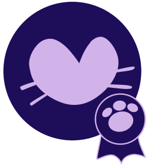

Max foi um gatinho aventuroso, que com suas 7 vidas, passou cada uma delas a me fazer companhia e junto com isso, me apresentou a uma forma de amor única.
Por ele e para gatinhos como ele, que a Maximal vem, para apoiar gatinhos especiais e seus tutores.
Como a Maximal transforma

Apoio a tutores
Central de auxílio
Alinhamento a ODS
Central de adoção
Objetivos de Desenvolvimento Sustentável
Sobre mim
Apaixonada por gatos desde pequena, tenho o objetivo de transformar vidas através da tecnologia.
Nada disso seria possível sem o apoio e amor incondicional da minha família, meus amigos, professores e é claro, meus gatinhos.